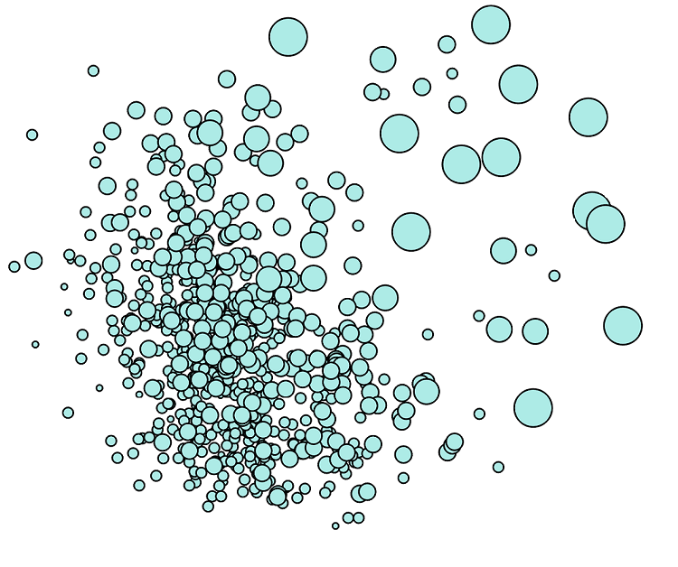
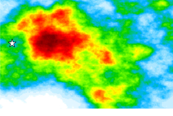
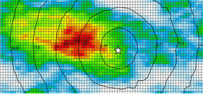
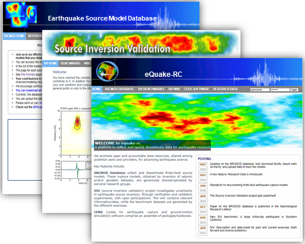
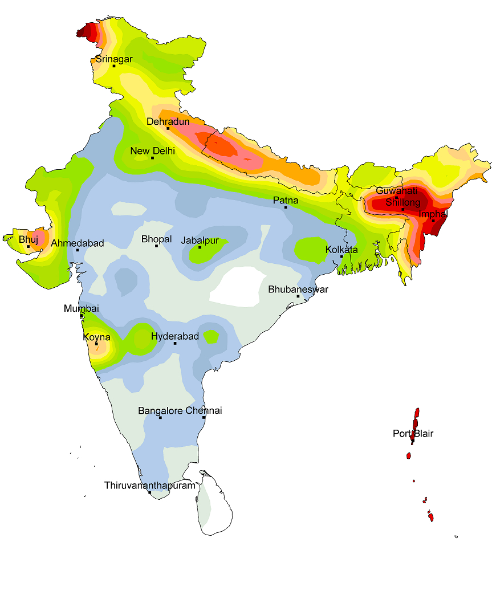

The following list summarizes my research efforts and related projects. A general outlook has been considered to prepare this list.
Machine Learning of Seismotectonics
To growing explore the abundent avaibilty of seismicity, application of Machine Learning (ML) tools are considered to advance our understanding of seismotectonics. Key topics include: investigation of rupture characteristics of historical earthquakes, delineating active-fault seismicity, and assessment of spatiotemporal seismicity.
This research project is currently at an initial stage. It is envisaged that the ML algorithms will allow unravel interesting patterns in the observed seismicity.
Advancing Earthquake-Source Knowledge
Advancing our knowledge of earthquake-source is crucial for reliable seismic-tsunami hazard calculations. For complete and comphresive modeling, We consider not only geometrical parameters, but also those of spatiotemporal evolution of slip.
We investigate source-scaling properties, and characteristics of the slip distribution using the SRCMOD database. These properties vary in different faulting regimes, controlled by tectonic settings such as seismogenic depth/width, and fault-dip angle. We also explore dynamic models derived from simulations of spontaneous ruptures, to examine the kinematic parameters (namely, rise time, rupture velocity, peak slip velocity). By reconciling the findings from source inversions and those from dynamic models, we aim at developing a holistic framework to describe the earthquake ruptures.
Generating Ground Shaking Scenario

A new workflow is developed to generate regional-scale realistic earthquake-shaking scenario. It adapts the widely-used ShakeMap approach .
Here, kernel convolution approximation
(kernel smoothing of Gaussian noise field)
is used to simulate ground motion residuals.
This approach is significantly faster than conventionally applied one, namely covariance matrix decomposition
(or generally referred to as Cholesky decomposition) technique. Furthermore, spatial conditioning can be achieved by
combining the unconditioned stochastic model with kriging interpolations.
[to be updated...]
Advanced Pseudo-dynamic Rupture Model Generator
We integrate the latest research findings in a new workflow, for pseudo-dynamic rupture modeling which emulate physically consistent properties of dynamic ruptures. The workflow implements a stochastic approach that reduces computational time compared to dynamic modeling for effective multiple realizations of rupture models. Closely linked with earthquake-source research, the new implementation is expected to supercede the existing rupgen tool. It will be also accessible on the GitHub repository
The eQuake-RC Platform for International Collaborative Research on Earthquake Source
Along with Prof. Martin Mai, I continue to develop and maintain this online platform. The website provides open data-resources, shared among potential users and providers, for advancing earthquake science.
Key features include: (1) SRCMOD database that collect and disseminate rupture models in consistent data format. (2) Source Inversion Validation (SIV) benchmark database and tools to investigate uncertainty in earthquake source inversions; and (3) Codes for Earthquake Rupture and ground-motion Simulation (CERS) that provide assemble of software packages.
We welcome your suggestions/feedback/contribution to improve the eQuake-RC platform.
New Probabilistic Seismic Hazard Model for India
This project comprise most work that I carried out for my PhD disseration (2007-2011, Department of Geology & Geophysics, Indian Institute of Technology Kharagpur). An updated seismic hazard model for India was imperative, given rapid urbanization and burgeoning population of the country. Existing one was older than a decade.
The following were accomplised: (1) compilation of an earthquake catalog, covering period: 0162−2008; (2) delineation of seismogenic sources using the catalog, focal mechanism data, fault map, and palaeoseismic findings; (3) development of seismicity models; (4) nation-wide investigation of site conditions, using data from microzonation projects and topographic-slope map; (5) selection and ranking of ground motion prediction equations for different tectonic provinces. The hazard components were integrated using a logic tree framework to implement probabilistic seismic hazard analysis.
Recently, the model has been revised by Nick Ackerley and adopted in the Global Earthquake Hazard Model.